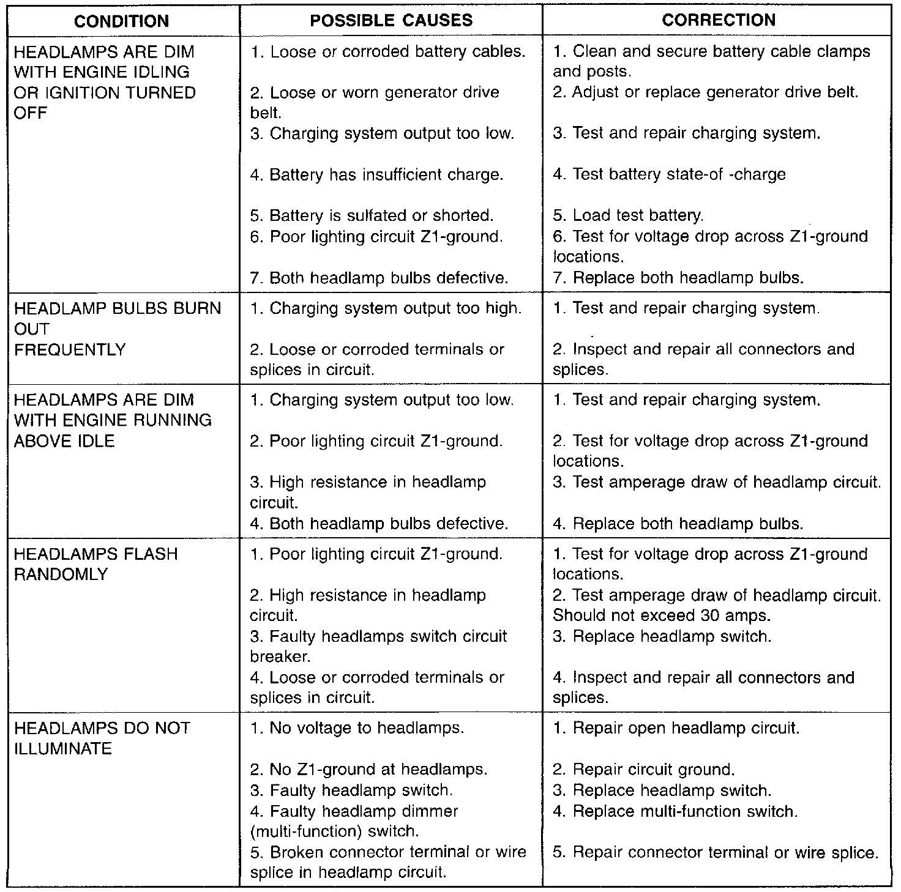
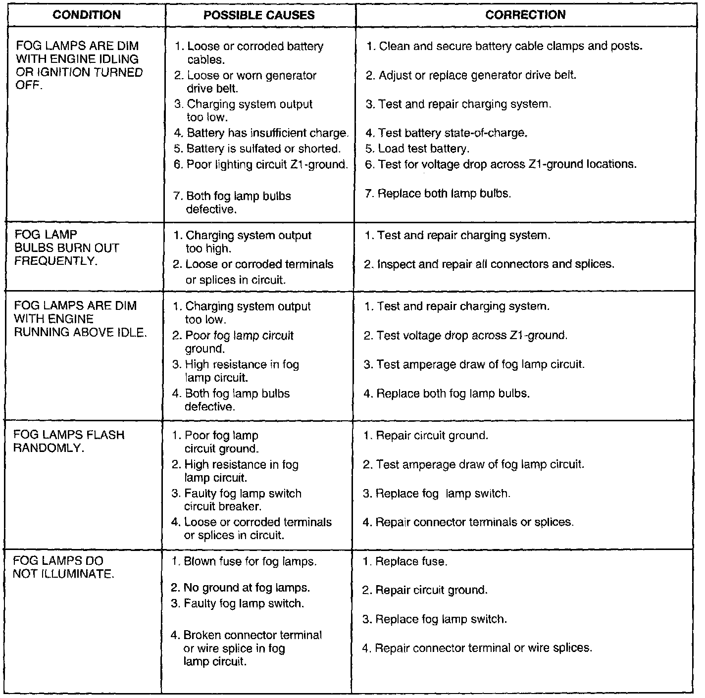
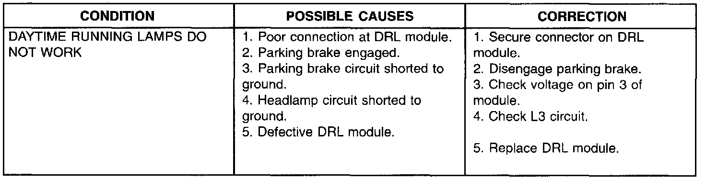

Diagnostic Tips
Headlamp Diagnosis:

Fog Lamp Diagnosis:

Daytime Running Lamp Diagnosis:

When a vehicle experiences problems with the headlamp system, verify the condition of the battery connections, charging system, headlamp bulbs, wire connectors, relay, high beam dimmer switch and headlamp switch.